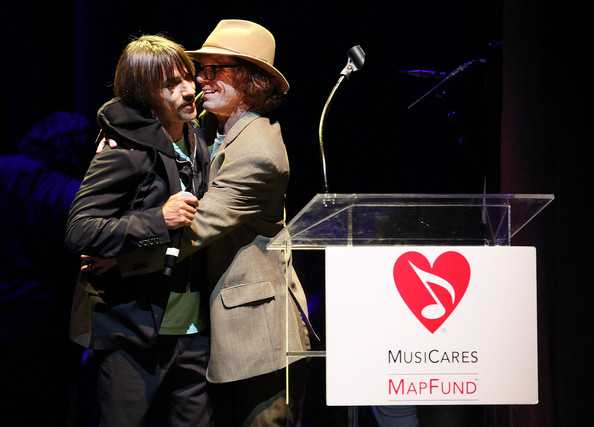
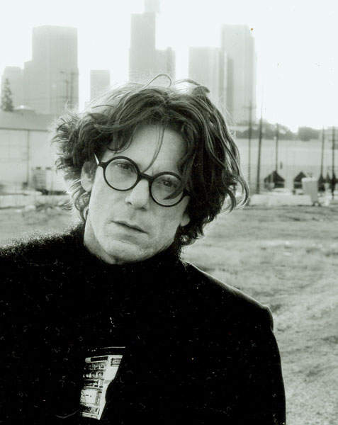
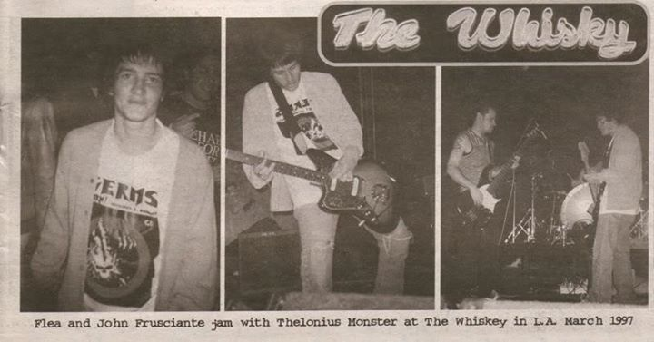
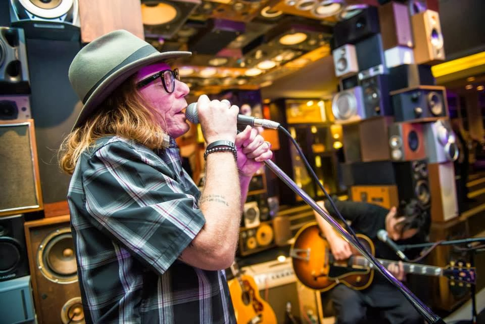
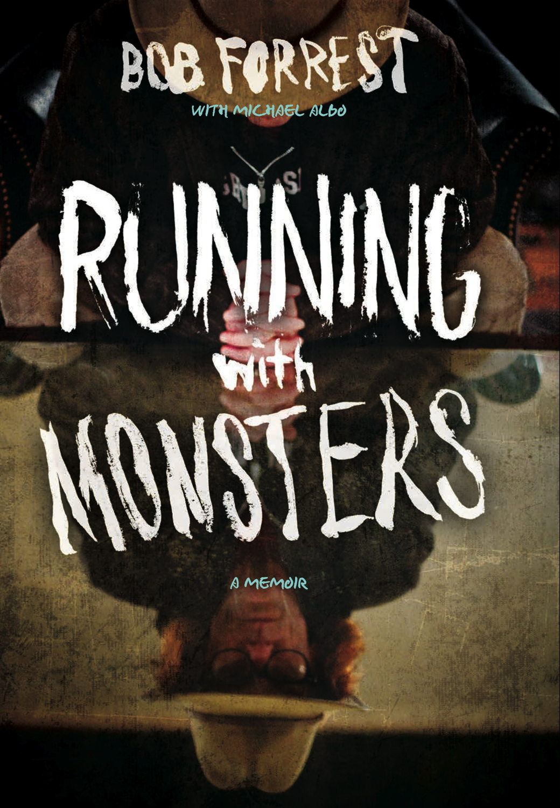

“Jestem znany jako “zaklinacz ćpunów”. Ciężko pracowałem na ten tytuł. Pomagałem uzależnionym z różnych środowisk i oferowałem im wsparcie, zachętę i przewodnictwo oparte na moich własnych doświadczeniach żeglowania przez wzburzone morza narkotykowego i alkoholowego uzależnienia. Znam ból i desperację nałogu z lat które zmarnowałem i z wielu nieudanych prób odwyku. To była dziwna podróż. Zacząłem ją jako nastoletni pijak z przedmieść południowej Kalifornii, a skończyłem jako przyboczny Red Hot Chili Peppers i Dr. Drew z „Celebrity Rehab”.
Tak Bob Forest rozpoczyna swój pamiętnik „Running with Monsters”, który ukazał się jesienią 2013 roku nakładem wydawnictwa Crown z Nowego Jorku. To bardzo szczere wyznania człowieka, który dostał od losu ogromny muzyczny talent i wiele możliwości jego rozwijania, ale nie wahał się, by zmarnować to wszystko i pogrążyć w mrokach podsycanych kolejnymi dawkami heroiny, cracku i alkoholu. Wkroczywszy w towarzystwo złotych chłopców Hollywood, takich jak muzycy z RHCP i Fishbone, Johnny Deep czy River Phoenix, używkami i gotowością do codziennie nowych szaleństw zagłuszał brak pewności chłopaka z przedmieść i – jak sam otwarcie przyznaje – zżerającą go skrycie zazdrość o ich bardziej spektakularne muzyczne i show biznesowe kariery. Kilkanaście lat i ponad 20 odwyków później Bob Forrest jest terapeutą w klinikach odwykowych, prowadzi własny program radiowy, ma rodzinę i „zmienił się z ćpuna w anioła”. Powstał o nim w 2011 roku film dokumentalny „Bob and The Monster”.
Teraz opowiada swoją historię sam, jedynie z redakcyjną pomocą Michaela Albo. Książka to dziwna, nielinearna opowieść, łącząca opisy muzycznej sceny Los Angeles lat 80. i 90 . z tragicznymi wspomnieniami i opisami narkotykowego upadku. To także opowieść o współczesnym Bobie Forreście – byłym narkomanie, który „ma najlepsze kwalifikacje na świecie”, by leczyć innych uzależnionych.
Rodzinne sekrety
Urodził się w 1961 roku w przeciętnej rodzinie z amerykańskiej klasy średniej mieszkającej na przedmieściach Palm Springs. Sielankowe dzieciństwo legło w gruzach, gdy trzynaście lat później przy okazji jakiejś zakrapianej alkoholem imprezy wyszła na światło dzienne skrzętnie ukrywana rodzinna tajemnica: rodzice Boba byli tak naprawdę jego dziadkami, a on był nieślubnym dzieckiem swojej starszej siostry…. Ta informacja była dla niego prawdziwa traumą: czuł się wściekły, że rodzina go okłamywała, zamknął się w sobie, spędzał czas zamknięty w swoim pokoju czytając książki lub włóczył się z kolegami.
Dziś z perspektywy lat Forrest twierdzi, że to właśnie przeżycia związane z tamtą sytuacją doprowadziły go do alkoholizmu i narkomanii. Alkohol pił już jako nastolatek. Gdy miał 15 lat zmarł jego „ojciec-dziadek”, a jego rodzina już wcześniej na skutek problemów finansowych wylądowała na osiedlu przyczep. W tej kiepskiej okolicy poza kolegami ze szkoły średniej szybko znalazł starszych i bardziej doświadczonych w alkoholowych libacjach kompanów. „Inne dzieciaki piły i grzecznie wracały do domu, by nie martwić rodziców, ja chciałem pić do wschodu słońca.” Pierwszy heroinowy strzał zaliczył w wieku 21 lat w towarzystwie bluesowego muzyka Top Jimmy`ego.
Demony nałogów sprawiły, że jego własna muzyczna kariera nieustannie kulała. Co gorsza nawet wyciągana przez kolegów pomocna dłoń i posady managera i szefa trasy RHCP również przerosły rzadko wychodzącego z zamroczenia Boba. „Nie potrafiłby zarządzać nawet 5 dolarami.” – podsumował jego pracę Anthony Kiedis na kartkach „Blizny”. Ale Bob pojawia się na kartach wspomnień frontmena RHCP bardzo często i choć jak twierdzi sam Kiedis „bliskość Boba była zarówno błogosławieństwem, jak i przekleństwem”, to określa go zawsze mianem swojego przyjaciela. No i to m. in. Bobowi Forrestowi zadedykowana jest „Blizna”.
Współlokatorzy
To Bob zaoferował chłopakom z RHCP dach nad głową gdy w 1983 roku wylecieli z kolejnego wynajmowanego mieszkania. Właśnie opuściła go żona, więc nie miał nic przeciwko temu, by w jego małej kawalerce pełnej książek i płyt zamieszkali Anthony i Flea. Życie codzienne w niesławnej La Leyenda trudno stawiać za przykład młodzieży: kombinowanie kasy, kupowanie narkotyków, odlot, impreza. Panowie tak wylecieli w kosmos, że w pewnym momencie wydawało im się, że założyli dobry zespół. La Leyenda Tweakers, z Kiedisem na wokalu, Flea na basie i Forrestem na gitarze, bo o tej „grupie” mowa, poległ na pierwszym publicznym występie – „byliśmy kompletnie naćpani speedem i wyglądaliśmy jak pacjenci z wariatkowa.” Malowniczo opisane w „Bliźnie” oczyszczanie organizmu arbuzami niewiele pomagało, za to Flea pomogła fascynacja ruchem straight edge i reprezentującą go hardcorową kapelą Minor Threat z Waszyngtonu.

Gala fundacji Musicares z 2009 roku, na której Kiedis został uhonorowany jako artysta wspierający walkę z narkomanią i to właśnie Forrest wręczał mu tę nagrodę.
Kolejną kwaterą Anthony`ego i Boba stał się Outpost przy Hollywood Boulevard. „Sceneria dekadencji, rozpusty i upadku”, sąsiad dealer i nadmiar wolnego czasu tylko pogarszały sytuację. Kiedis nie opamiętał się zbytnio nawet wtedy gdy Peppersi podpisali kontrakt z EMI, a Flea zagroził odejściem z zespołu. Bob w razie potrzeby podsuwał kontakty do kolejnych dealerów, sesje nagraniowe do pierwszej płyty szły jak po grudzie, w nałóg wpadła także ówczesna dziewczyna Kiedisa, Jennifer Bruce. Słabym pomysłem okazało się także zatrudnienie Boba podczas trasy po Stanach, po wydaniu „Freaky Styley” w 1985 roku. Po pierwsze był nieodpowiedzialny i potrafił na przykład prowadzić zespołową furgonetkę po pijaku, po drugie jawnie demonstrował swoją zazdrość niespełnionego artysty, po trzecie – zawsze i wszędzie potrafił znaleźć narkotyki. Opisana przez Kiedisa w „Bliźnie” ponarkotykowa paranoja, spowodowana hałasem lecącego helikoptera, wydaje się jeszcze bardziej upiornie śmieszna, gdy Bob dopowiada w swoich wspomnieniach: „Baliśmy się, że przyjdzie po nas jednostka specjalna policji, postanowiliśmy więc udawać, że śpimy. Minęło kilka godzin, gdy nagle doznałem olśnienia i powiedziałem Anthony`emu: Zorientują się, że udajemy, przecież jesteśmy w ubraniach.” Minęły kolejne godziny, wstało słońce i nasi ćpuni zorientowali się, że za płotem motelu jest lotnisko….
Oczywiście niewygody trasy i stały dopływ prochów nie sprzyjały tworzeniu miłej atmosfery: w końcu po kolejnej awanturze koledzy z RHCP zostawili Boba Forresta w Nowym Jorku i pojechali dalej.
Zaćpana muza
Nieudana współpraca w trasie wcale nie zakończyła przyjaźni Boba z chłopakami z RHCP. Ale nadal nie brakowało powodów do konfliktów i zazdrości – nieodwzajemniona wielka miłość Forresta, niejaka Kim Jones, zdecydowanie wolała towarzystwo Kiedisa i wspólne z nim eskapady w poszukiwaniu dealerów. Bob uwiecznił swoją ukochaną w pochodzącej z pierwszej płyty Theleonius Monster piosence „…and the rest of the band” z pełnym zgryźliwości referenem „Skoro nie 
Jak radził sobie Bob na muzycznej scenie? W 1983 roku założył zespół Theleonius Monster, który swoją nazwę wziął od imienia i nazwiska jazzowego wirtuoza Theleoniusa Monka. Przez zespół przewinęli się m. in. basiści Jon Huck i Martyn LeNoble, gitarzyści Chris Handsome, Dix Denney, Zander Schloss, Mike Martt, Jon Sidel oraz perkusista Pete Weiss. Pierwszy album TM, „Baby…You’re Bumming My Life Out In A Supreme Fashion” ukazał się w 1986. Produkowany przez Flea jest naprawdę ciekawą płytą – łączy funkowe, punkowe, a nawet folkowe wpływy z inteligentnymi, ironicznymi tekstami.
Kolejny „Next Saturday Afternoon” powstał w 1987 r. Zespół bywał supportem RHCP, Janne`s Addiction, a nawet Guns`n`Roses. Ale mimo wydania 5 albumów i uznania kolegów z muzycznej sceny LA („I stop and take to listen what monsters try” śpiewał Kiedis w „Good Time Boys” z płyty „Mother`s Milk”, w tym samym utworze znalazł się też fragment „Try” TM) nie doczekał się większej popularności.
Thelonius Monster „Try”
Przełomem mógł być głośny koncert Thelonius Monster na festiwalu Pinkpop w 1993 roku. Ale pierwszy poważniejszy międzynarodowy występ nie zdarzył się w najlepszym dla zespołu i jego lidera momencie. Jak wspomina Forrest, w 1993 roku jego grupa była na skraju rozpadu, a on sam był bezdomny, pozbawiony środków do życia, głęboko uzależniony. Występ na Pinkpop miał być w jego pierwotnym zamyśle dramatycznym happeningiem, zakończonym samobójczym skokiem z rusztowania sceny. Wokalista jednak stchórzył, ale desperacki klimat tego występu można do dziś prześledzić na YouTube.
O dziwo publiczność z aplauzem przyjęła ten show, ale chwilowy sukces tylko o kilka miesięcy wydłużył agonię zespołu.
Złodzieje gitar
Chłopaków z RHCP ewidentnie wolały nie tylko dziewczyny, ale także gitarzyści Thelonius Monster. Pierwszy, w 1998 był John Frusciante. Anthony Kiedis osobiście zawiózł go na przesłuchanie w garażu Boba i zachwalał jego talenty, by po 3 godzinach zaproponować mu angaż w swoim zespole. Frusciante jednak nie raz wspierał cierpiący na nieustanne kadrowe braki zespół przyjaciela. Wspomina w filmie „Bob and The Monster”, że gdy poznał poznał Flea i Anthonyego, gdy był w RHCP po raz pierwszy i tuż po odejściu z grupy, zdarzało mu się grać koncerty z Thelonius Monster, gdy akurat potrzebowali gitarzysty. „Mieli wtedy tylko 3 albumy, znałem ich piosenki jak własną rękę. Grałem z nimi czasem, czasem grał z nimi Flea.”

Kolejnym, znacznie już poważniejszym „zdrajcą” był Zander Schloss. Pojawił się w Thelonius Monster przy okazji nagrywania w 1992 roku albumu „Beautifull Mess” i zrejterował skuszony posadą wiosłowego zwolnioną przez Johna w RHCP. Bob wkurzył się do tego stopnia, że wykreślił go z kontraktu podpisanego przez grupę z Capitolem, mimo że gitarzysta wrócił po kilku tygodniach z podkulonym ogonem, gdy okazało się że nie do końca pasuje Papryczkom.
Ciągłe zmiany składu i niepowodzenia artystyczne szły w parze z coraz głębszym nałogiem. Zresztą nie tylko Forresta, ale także jego perkusisty Pete`a Weissa. Kiedy Peppersi pracowali nad „One Hot Minute”, Kiedisa nie mogły opuścić myśli o przyjaciołach „przebywających w Nibylandii”. Bonusowy kawałek z tej płyty,”Bob”, to opowieść o Forreście i wyraz troski o życie przyjaciela.
“Blackest flag at dawn
A lust for life that kills itself before it gets too strong, that’s wrong
Please be lifelong
‘Cause there will never be another one just like you, no
Bob… “
A Forrestowi bynajmniej nie służyły takie pomysły, jak pomieszkiwanie z ćpającym i wówczas jeszcze mającym kasę na narkotyki Johnem Frusciante. Dziś nie ma złudzeń co do ówczesnych motywów swojego postępowania: „Kiedy się staczasz i wariujesz, przypinają się do ciebie najgorsze szumowiny w LA, bo liczą na dach nad głową, darmowe narkotyki i seks oraz kablówkę. Zadają się Tobą oportunistyczne gównojady. Wiem coś o tym, bo sam się tak zachowywałem w stosunku do wielu ludzi w tym mieście.”
Paradoksalnie okazało się jednak, że to właśnie maksymalnie zaćpany i odporny na wszelkie kuracje odwykowe Bob ma dość siły, by okazać się „feniksem powstającym z gówna”, jak określił go Kiedis w filmie dokumentalnym „Bob and The Monster”. Poza tym, że ocalał sam, to jeszcze miał dosyć energii i samozaparcia, by ratować innych. W 1996 roku wyszedł z nałogu. W marcu 1997 roku zaprosił uzależnionego nadal Johna Frusciante do zagrania koncertu z Theleonius Monster oraz do udziału w tzw. Nuttstalk Tour – krótkiej klubowej trasie po 8 amerykańskich miastach, a potem namówił go na odwyk w ośrodku Las Encinas. Trzy lata później zaś pomagał Louisowi Mathieu przeszukiwać narkomańskie meliny w poszukiwaniu Kiedisa, zanim ten ostatecznie rzucił prochy.
Piosenka o owsiance
O efektach rock`and rollowego życia mówi dobitnie „Cereal Song” – piosenka pochodząca z wydanej w 1999 roku jedynej płyty zespołu Bicycle Thief – grupy, którą Bob Forrest założył 2 lata wcześniej z 17-letnim wtedy Joshem Klinghofferem.
Oh heroin, oh heroin
And cocaine, and cocaine
Well, I loved them both
But they took my life, they took my friends
They wont give em back, well, I want em back
Oh, give em back now
And what has it gotten me?
Just some teeth I cant chew
My favorite cereal with
John Frusciante zagrał tę piękną, smutną melodię na gitarze akustycznej, a Bob Forrest zaśpiewał. Równie przejmujący, choć może mniej dosłowny jest inny wspólny kawałek obu panów „Dying Song”.
Niestety kariera Bicycle Thief skończyła się na „You Come and Go LIke a Pop Song”. Josh zaczął grywać coraz częściej z Johnem Frusciante i z innymi muzykami, a Bob Forrest postanowił zmienić swoje życie i zająć się ratowaniem narkomanów. Najpierw pracował jako wolontariusz i kończył specjalistyczne kursy, potem z pomocą swojego medycznego mentora, doktora Pinsky`ego został konsultantem w ośrodku Las Encinas. Specjalizuje się w pracy z uzależnionymi artystami. Wraz z Pinskym występował w telewizyjnym reality show „Celebrity Rehab”. W 2010 roku otworzył własną poradnię dla uzależnionych Hollywood Recovery Services, ale po dwóch latach musiał ją zamknąć i obecnie działa jako indywidualny terapeuta.

Bob Forrest nie zrezygnował jednak całkowicie z muzyki. W 2004 roku wyszła płyta Thelonius Monster „California Clam Chowder”, a w 2009 roku zespół reaktywował się i zagrał serię koncertów. Z kolei Bicycle Thief w 2009 roku nagrało internetowy, koncertowy album „The Way It Used To Be”. Na oficjalnej stronie Boba Forresta można nawet znaleźć informację, że panowie nie wykluczają powstania następnego, ale chyba odkąd Josh został etatowym gitarzystą RHCP szanse na to wydatnie zmalały. Na pocieszenie fanom zostają takie wydarzenia, jak spontaniczny koncert w 2013 roku w Hard Rock Hotel w Palm Springs z okazji urodzin Josha.
Warto też zaznaczyć, że to właśnie Josh skomponował ścieżkę muzyczną do „Bob and the Monster”. Bob Forrest nagrywa również solo – w 2006 roku ukazał się jego pierwszy album „Modern Folk And Blues Wednesday”.
Bolesne rozrachunki
„Ta książka zjebała mi głowę.” – przyznaje Bob mówiąc o swoich wspomnieniach. „Nie było łatwo ją napisać. To bolało. Bolało patrzenie wstecz na moje dzieciństwo, młodość, muzyczną karierę, którą odrzuciłem, przyjaciół, którzy przyszli i odeszli na zawsze, bolało poczucie winy ocalonego, plotki, głupota, geniusz, radość, mój starszy syn Elijah, wszystkie błędy, które popełniłem, wszyscy ludzie, którym pozwoliłem odejść i narkotyki. Nieustannie narkotyki. Żeby nie wiadomo co, zawsze narkotyki. Byłem z nimi związany na zawsze i wierzyłem, że nigdy ich nie porzucę.”

Okładka Running with Monsters
Pisanie musiało być dla Forresta próbą zmierzenia się w wieloma niechlubnymi wydarzeniami z przeszłości. Noc w Viper Room w 1993 r., kiedy zginął River Phoenix mogła zakończyć się inaczej gdyby potraktował poważnie słowa przyjaciela wspominającego, że czuje się słabo i prawdopodobnie przedawkował. Forrest wspomina spotkanie w biurze klubu po nieudanym koncercie Johna Frusciante i Riviera: „Ktoś wyjął heroinę i rozdał wszystkim, River był ewidentnie nawalony i ledwo trzymał się na nogach, zupełnie jak bokser, który dostał zbyt wiele ciosów w głowę podczas walki liczącej 15 rund.” Potem, gdy aktor powiedział, że źle się czuje, Bob zlekceważył ten niepokojący sygnał, a gdy podniesiono alarm z powodu zasłabnięcia Rivera, uciekł wraz z resztą towarzystwa, aby uniknąć spotkania z policją będąc pod wpływem narkotyków.
Odstawienie na odwyk Johna Frusciante z pomocą Perry`ego Farrela w 1995 roku też nie do końca było wynikiem przyjacielskiej troski – ledwo zamknęły się za nim drzwi ośrodka, Bob już plądrował jego dom przy Hollywood Boulevard w poszukiwaniu prochów. „Narkomani uwielbiają mieć w swoim otoczeniu kogoś, kto swoim złym stanem może usprawiedliwić ich dalsze tkwienie w nałogu. Patrzyłem na Johna (Frusciante) z którym mieszkałem i myślałem „Oh, ze mną nie jest jeszcze tak źle”. Perry Farrel pewnie patrzył na mnie i myślał „No, ze mną nie jest jeszcze chyba tak fatalnie.”
Równie trudne były też zapewne wspomnienia o tych, których, mimo najszczerszych chęci, Bob nie powstrzymał od narkotykowego samounicestwienia, tak jak frontmana Alice in Chains, Layne`a Staleya. Na przełomie 1999 i 2000 roku odwiedzili go wraz z Johnem Frusciante w Seattle, ale ta wizyta nie odniosła oczekiwanego skutku.
Wieczny płomień
Co jeszcze wyróżnia opowieść Forresta? Z pewnością bardzo krytyczny stosunek do „przemysłu” odwykowego i do stosowanych w nim metod leczniczych: od terapii dwunastu kroków, po farmakoterapię. W towarzyszących wydaniu książki wywiadach wielokrotnie zwracał uwagę na drastycznie rosnącą liczbę narkomanów w Stanach Zjednoczonych, na plagę „narkotyków na receptę” – czyli uzależniających leków. Wypowiada się na tematy dotyczące terapii uzależnień z ogromnym zaangażowaniem i pasją, równą niemal tej jaką prezentował niegdyś na scenie. „Mam w głowie wiele obrazów Boba śpiewającego, zatracającego się w muzyce. Wydawało się, że jego dusza wychodzi ze skóry, że opuszcza ciało. Wiele razy miałem wtedy gęsią skórkę, drżałem. Jego występy zawsze były bardzo intensywne, jego krzyki, śpiew były niesamowite – poruszały serca wszystkich, którzy byli tego świadkami.” – wspomina John Frusciante w „Bob and The Monster”. Może więc Bob zapisał swoją receptę na życie w jednej ze swoich piosenek:
„The trick is to burn, burn, burn, but don’t burn out”.
Wypowiedzi Johna Frusciante na temat Boba oraz Thelonious Monster z filmu „Bob and The Monster
http://invisible-movement.net/2011/04/exclusive-john-frusciante-bob-monster
Autor tekstu: Wanda Modzelewska
Edycja oraz oprawa graficzna: Marcin Rudnik
Żródła:
www.bobforrestmusic.com
www.bobandthemonster.com
www.invisible-movement.net
www.randomhouse.com